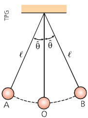

pergunta de pesquisa

O estudo do movimento de um pêndulo simples constituído por uma massa suspensa na extremidade de um fio revela princípios fundamentais da física. Embora essa oscilação do objeto pareça irrelevante à primeira vista, o fenômeno levanta um questionamento científico central: quais variáveis de fato alteram o período de oscilação do pêndulo? Diante disso, esta pesquisa busca responder se o comportamento dinâmico do sistema é modificado ao alterarmos o comprimento do fio, a massa do corpo ou o ângulo inicial de liberação.
pergunta investigativa: o projeto realiza medições sistemáticas de distância e tempo em três condições experimentais distintas. A partir dos dados coletados, são construídos gráficos para uma análise quantitativa da aceleração do sistema. Os conceitos de Movimento Retilíneo Uniforme (MRU), Movimento Retilíneo Uniformemente Variado (MRUV) e as Leis de Newton são aplicados diretamente na modelagem e interpretação dos resultados obtidos.